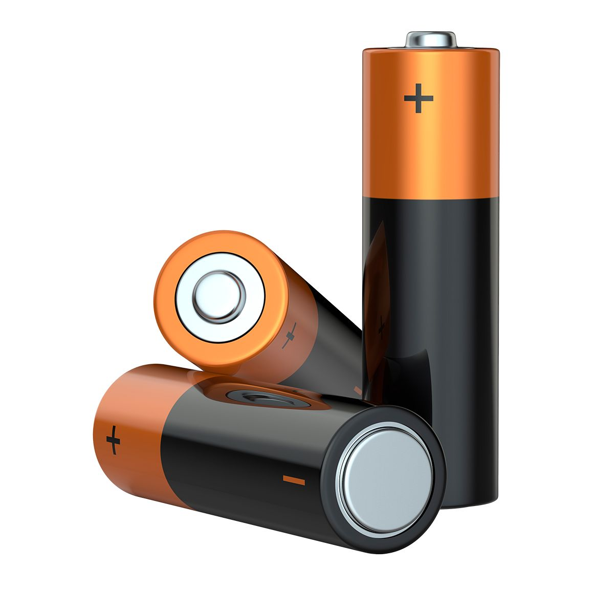
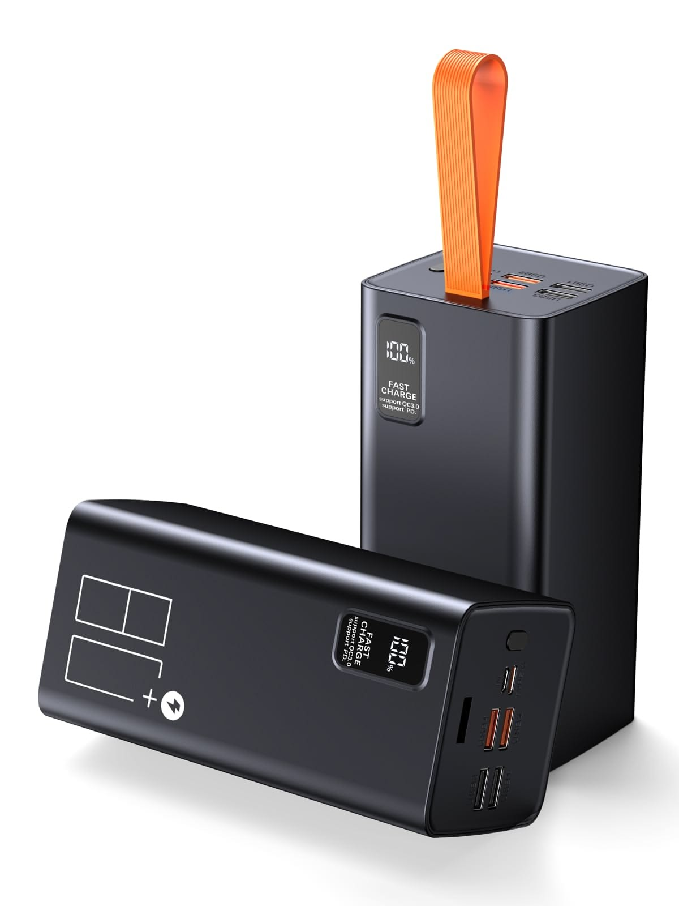

Atomic Number : 3
Atomic Mass : 6.94
Proton Number : 3
Neutron Number : 4
Category : Metal (Alkali Metal)
Lithium was discovered in 1817 by Swedish chemist Johan August Arfwedson while he was studying the mineral petalite. He noticed that it contained a new element with properties different from known elements. Pure lithium was first isolated in 1855 by German chemist Robert Bunsen and British chemist Augustus Matthiessen. The element was named lithium from the Greek word “lithos,” meaning “stone,” because it was discovered in a mineral. Today, lithium is widely used in rechargeable batteries, ceramics, glass, and other technologies.

State at room temperature: Solid Colour: Silvery-white Odour: Odourless Taste: Tasteless Density: 0.534 g/cm³ Melting point: 180.5°C Boiling point: 1342°C Solubility: Reacts with water Molecular form: Usually exists as Li
Lithium is a highly reactive metal. It reacts vigorously with water to form lithium hydroxide and hydrogen: 2Li + 2H₂O → 2LiOH + H₂ It reacts with oxygen to form lithium oxide: 4Li + O₂ → 2Li₂O Lithium reacts with halogens, such as chlorine, to form compounds: 2Li + Cl₂ → 2LiCl It can react with nitrogen to form lithium nitride: 6Li + N₂ → 2Li₃N Lithium is stored in oil because it reacts with moisture and oxygen in the air. It is a strong reducing agent and readily loses one electron to form Li⁺ ions.
Lithium is a relatively rare element and is not usually found alone in nature because it is highly reactive. It is mainly found in minerals and salt deposits. Lithium occurs in minerals such as spodumene and petalite. It is also found dissolved in saltwater, including brines in salt flats. Lithium is extracted from mineral ores and brines for use in various industries.
Lithium is a useful element and is used in many different areas. It is widely used in rechargeable batteries for phones, laptops, electric vehicles, and other electronic devices. Lithium compounds are also used to make heat-resistant glass and ceramics. Lithium is used in some lightweight metal alloys to make them stronger and lighter. It is also used in certain industrial applications and is an important material in modern energy-storage technology.


Lithium is the lightest metal. It is the lightest solid element at room temperature. Lithium is very soft. It can be cut with a knife. Lithium can float on water because it has a very low density, although it reacts with water. Lithium is highly reactive. It reacts with water and produces hydrogen gas. Lithium is used in rechargeable batteries. Lithium-ion batteries are used in phones, laptops, and electric vehicles. Lithium is used in heat-resistant glass and ceramics. Its compounds can help materials withstand high temperatures. Lithium compounds can produce a bright red or crimson colour in flames, which is useful in fireworks. Lithium is used in some medicines. Certain lithium compounds have been used to treat some mood disorders under medical supervision.